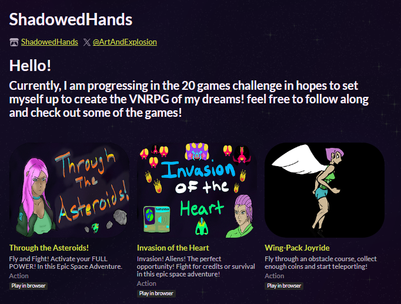
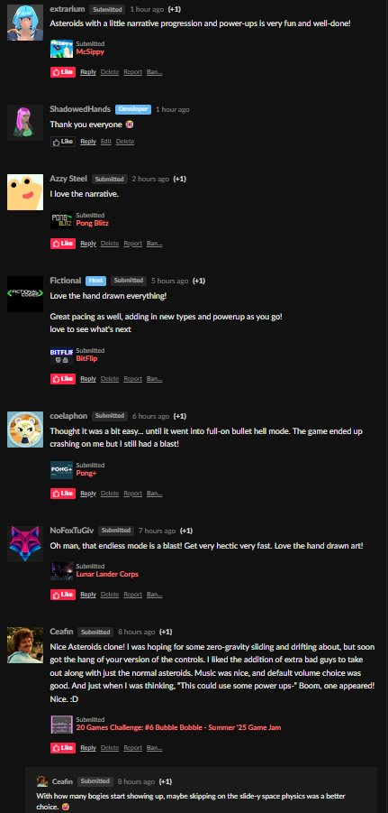

Under the alias, ShadowedHands, I have been working on making games using the Godot Engine and publishing them on Itch.io.
Part of the 20 Games Challenge, I am creating games from scratch
using GDscript and my own art. Its a fun exercise in figuring out
the development cycle where I have to wear many hats to get a game across
the finish line.
Planning to post the scripts on my GitHub soon!
So far I have made 4 classic games in my own style. Pong,
Jetpack Joyride, Space Invader and Asteroids!
Itch.io Profile

You can also follow me on my X account where I post updates and artwork for my games
ArtAndExplosion
Check out some of the comments from players below!
From my most recent game "Through the Asteroids!"
